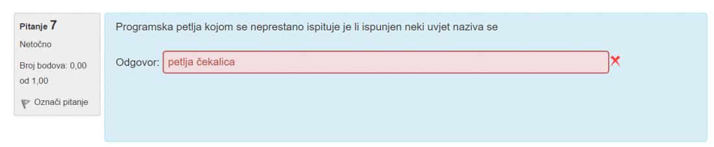

Gdje je pohranjena adresa prekidne rutine
steker
 Što bi ovdje bilo točno?
Valentino
Koji je ovdje trebao biti odgovor?
logitech
logitech i meni je 13.5 bilo netocno, jedino drugo moguce rjesenje je onda 10.5
Olive Oil imas drukcija trajanja od logitech pa nije isto rjesenje
logitech Mislim da je trajanje 13ms, svaki traje 6.5ms (1 za prihvat, 5 za trajanje, 0.5 za povratak) i prvi se u potpunosti dovrsi pa onda zapocne isti proces za drugi, pa se zavrsi u 14. ms
logitech na kraju ispada da je odgovor 14 jer su oni pod obradu računali i pip, iako sama obrada kao obrada završava u 13.5
Olive Oil Kako ti izgleda skica za 8?
itsdend
nešto ovak
MA ali prvi tek krene u 1.ms pa je 14
MA nije nego 14 ne uključuješ da je u prvoj ms tek započeo prekid
Navesti naziv sklopa koji je s jedne strane prilagođen ulazno-izlaznoj napravi, a s druge strane sabirnici. Nije li to sklop za prihvat prekida?
gasaf pristupni sklop
Me
MrPeanutButter editala sam odgovor
Fortius predo sekundu prije nego si stavila, 10.5 zaokruzio F
to mi baš nije jasno, naglase kad prestane obrada, a onda priznaju sa pip
gasaf mislim da su mislili na obradu prekidnog potprograma, tak sam ja barem shvatila. pa u to ulazi i obnavljanje konteksta
sve točno